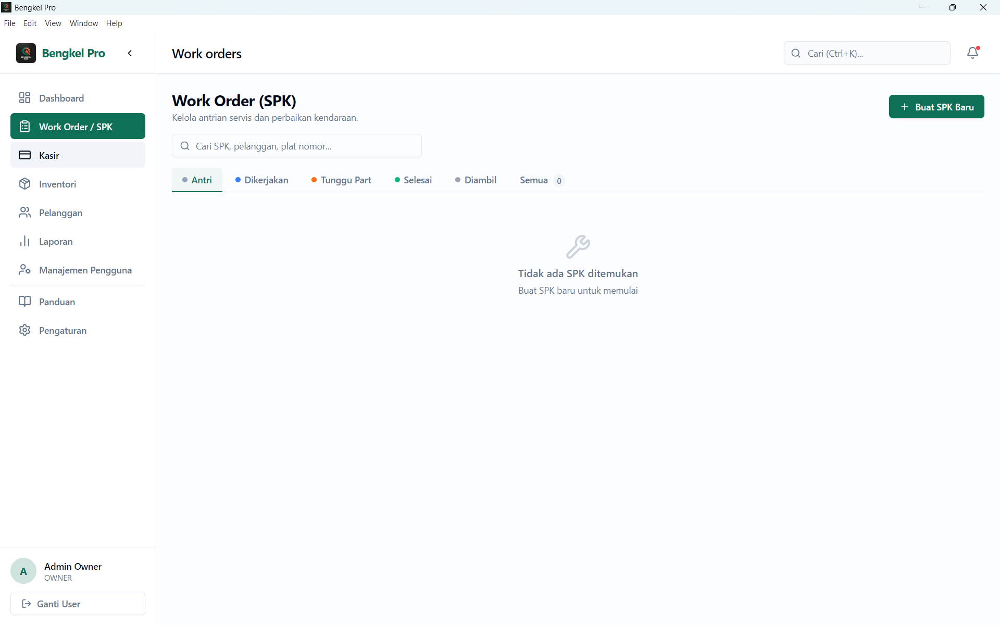
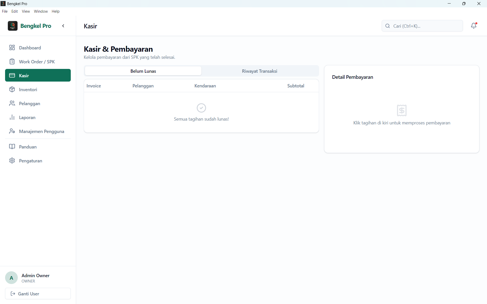
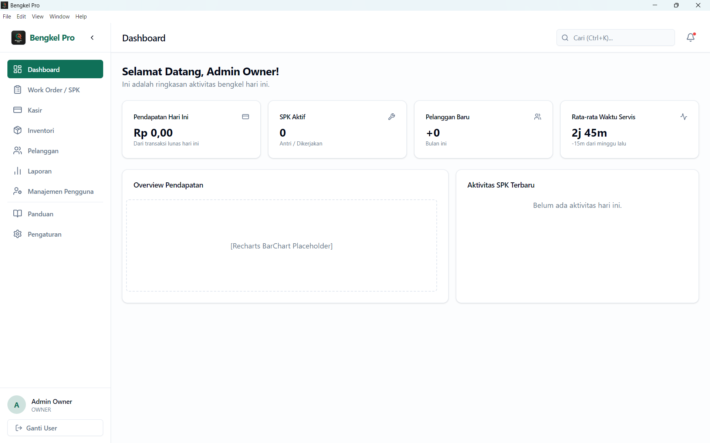
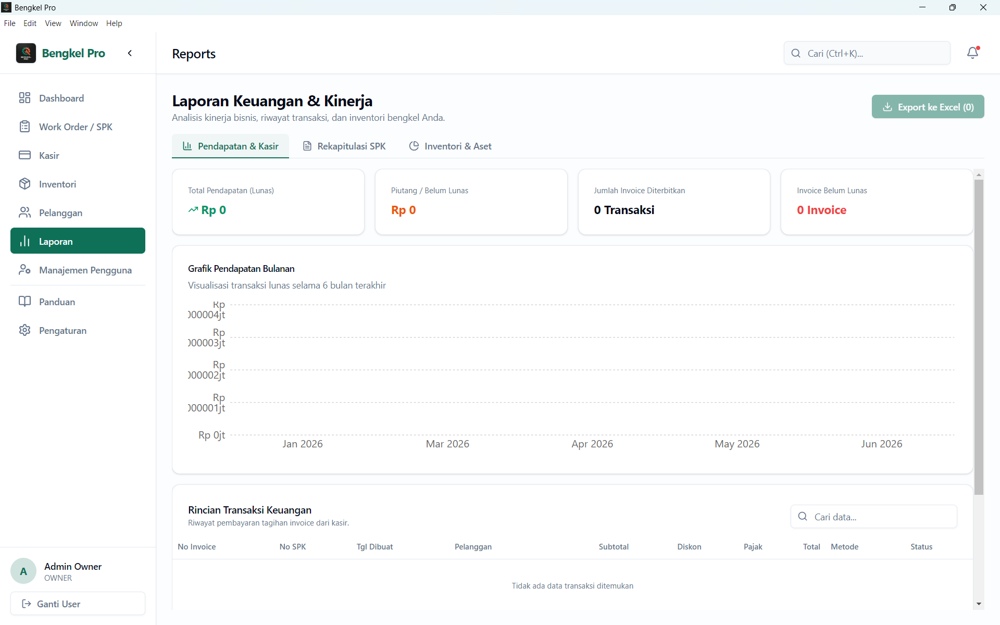
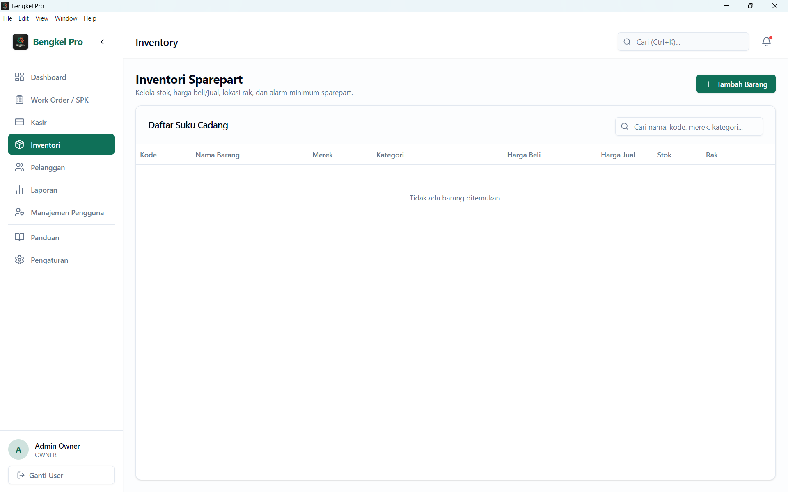
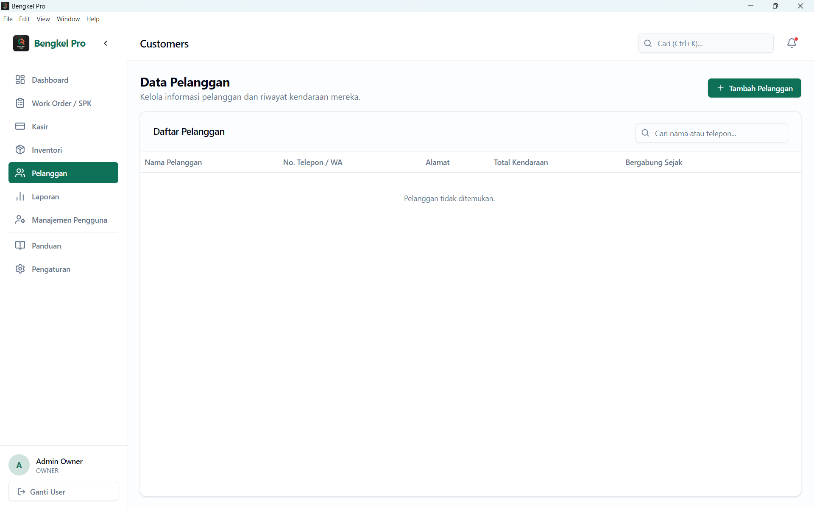
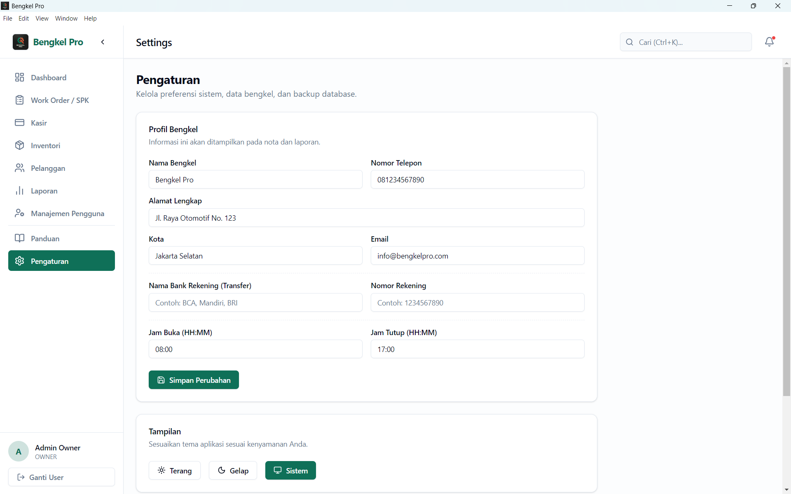

Berdayakan bisnis bengkel Anda dengan aplikasi kasir dan operasional komprehensif yang berjalan secepat kilat tanpa perlu koneksi internet atau biaya berlangganan.



Pantau ringkasan harian pendapatan, jumlah servis, dan valuasi aset stok dengan dukungan export ke Excel.

Papan antrean servis interaktif (Kanban Board) dengan integrasi otomatis pemotongan stok dan tagihan kasir.
Sistem POS canggih dengan diskon, PPN, dan berbagai metode pembayaran. Cetak struk thermal atau PDF.
Manajemen mutasi stok presisi, notifikasi batas minimum, dan sistem audit stok gudang.

Catat data historis pelanggan dan riwayat servis kendaraan untuk memberikan pelayanan yang lebih personal.

Kustomisasi mode gelap/terang, pengaturan hak akses pengguna, serta pencadangan database mudah ke Flashdisk.

Semua yang perlu Anda ketahui sebelum memulai.